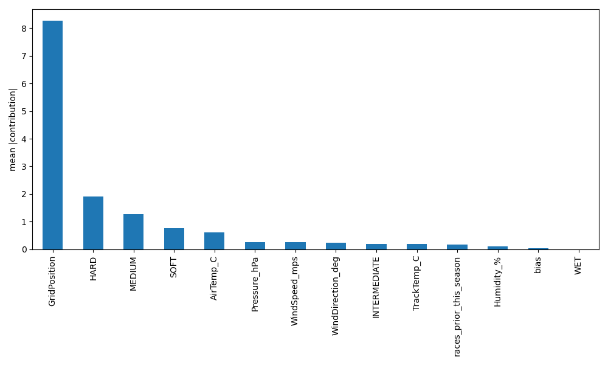

SHAP-like report (XGBoost pred_contribs — tuned)
Global importance (validation — mean |contribution|)

Top features (validation)
- GridPosition: 8.2688
- HARD: 1.9132
- MEDIUM: 1.2794
- SOFT: 0.7623
- AirTemp_C: 0.6045
- Pressure_hPa: 0.2656
- WindSpeed_mps: 0.2550
- WindDirection_deg: 0.2474
- INTERMEDIATE: 0.1978
- TrackTemp_C: 0.1941
Local contributions (first 5 test rows)
Test row 0
Open contribution table
Test row 1
Open contribution table
Test row 2
Open contribution table
Test row 3
Open contribution table
Test row 4
Open contribution table